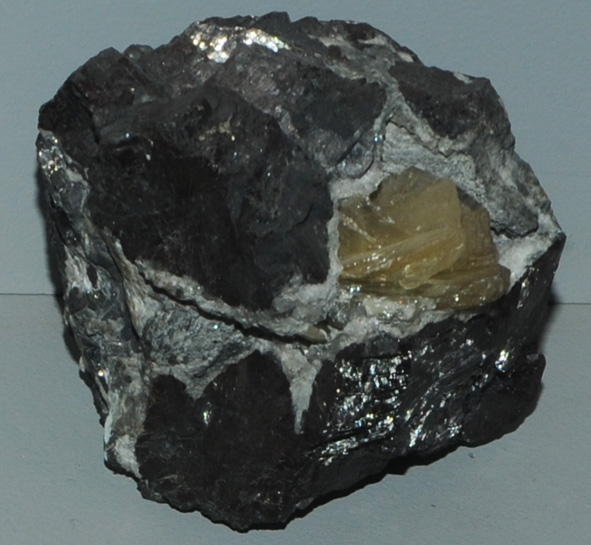

|

| PbClF
This sample of matlockite is displayed in the Smithsonian Museum of Natural History. Matlockite is a compound of lead with chlorine and fluorine. It has the composition PbClF. The sample at left is about 8 cm across and is from Matlock, Derby, England. It is described as matlockite with galena. Matlockite is usually colorless to light yellow.
|